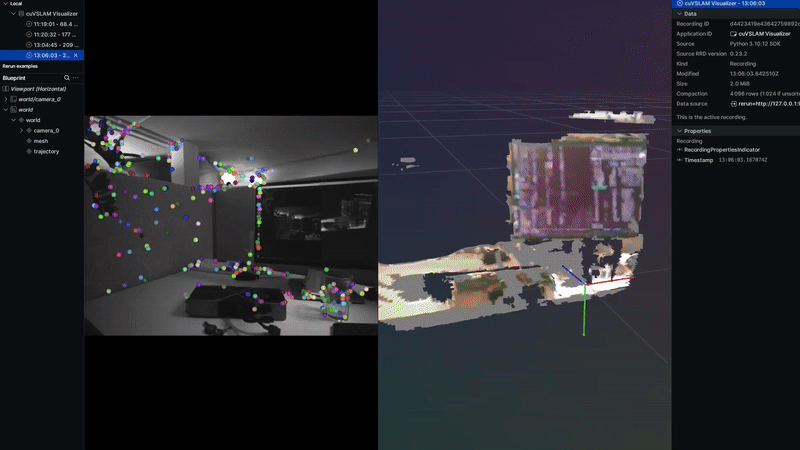
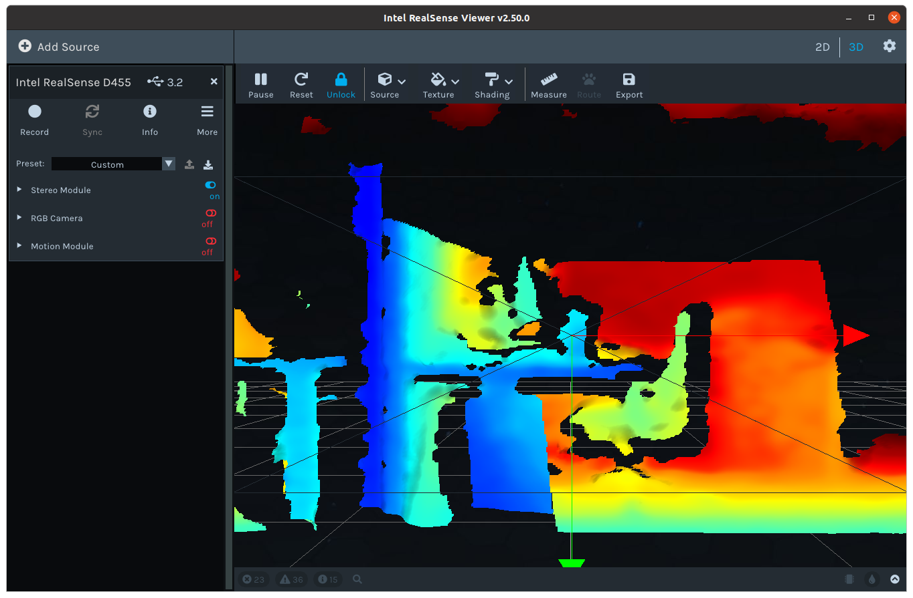
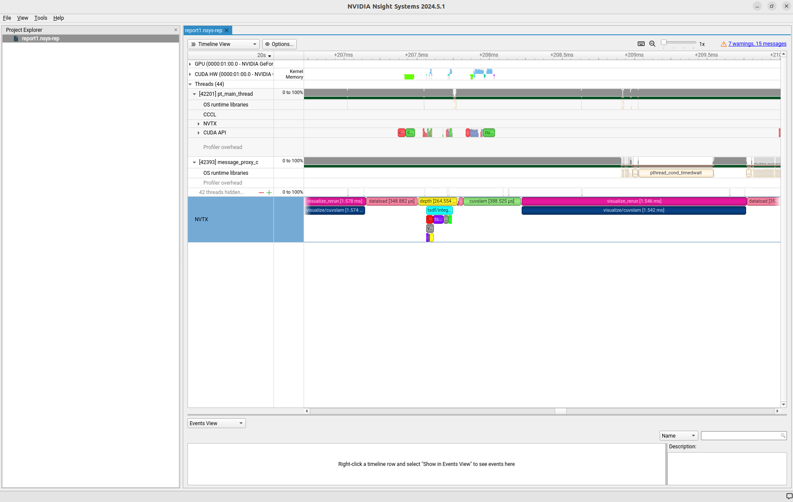

Realsense Live Example#
This example demonstrates running nvblox_torch for 3D mapping on live data from a
RealSense camera, using
PyCuVSLAM for visual odometry.
The example demonstrates how to capture RGB-D data, track the camera pose,
and build a live 3D reconstruction in python.
{kind=link}

The code for this example can be found at run_realsense_mapper.py
Description#
This script integrates three main components:
RealSense Camera: Captures color, depth, and stereo greyscale images.
PyCuVSLAM: Provides real-time camera pose estimation using the stereo greyscale images.
nvblox_torch Mapper: Builds a 3D map (TSDF voxel grid and color mesh) from the live depth and color frames, using the tracked camera poses.
Prerequisites#
Note
At the time of publishing, this example only runs on Ubuntu 20.04, and 22.04. librealsense is not yet officially supported on on 24.04.
You will need a RealSense camera. We have tested on the D435i and D455.
Other realsense cameras may or may not work.
We have tested on realsense camera firmware version 5.13.0.50.
The example runs inside a docker container, however,
we require librealsense to be installed outside of the docker container, on the host system.
To do so we run:
mkdir -p /etc/apt/keyrings && \
curl -sSf https://librealsense.intel.com/Debian/librealsense.pgp | tee /etc/apt/keyrings/librealsense.pgp > /dev/null && \
echo "deb [signed-by=/etc/apt/keyrings/librealsense.pgp] https://librealsense.intel.com/Debian/apt-repo `lsb_release -cs` main" | \
tee /etc/apt/sources.list.d/librealsense.list && \
apt-get update && \
apt-get install -y librealsense2-utils librealsense2-dkms
To check that the installation is successful you can run:
lsusb
The realsense camera should be listed amongst the connected devices. For the D455 it is listed as:
Bus 002 Device 101: ID 8086:0b5c Intel Corp. Intel(R) RealSense(TM) Depth Camera 455
If this works you should then be able to run:
realsense-viewer
The realsense-viewer window should open with which you can enable various image streams.
{kind=link}

Note
The realsense depends on the particulars of your system outside of our docker.
Furthermore, the camera has several firmware versions (we recommend 5.13.0.50).
We have had success, however, many people have issues with the camera.
For camera issues check the realsense issues page
How to run#
This example requires additional dependencies.
We provide example-specific Dockerfile which wraps the dependencies of this example,
along with nvblox_torch, into a container.
To run this example we first build the docker image. From the root of the nvblox
repository run:
python3 ci/nvblox_ci.py --image realsense
Then launch the container:
docker/run_docker.sh -i nvblox_realsense_example_cu12_u22
Now we launch the example:
python3 -m nvblox_torch.examples.realsense.run_realsense_mapper
The example should open a window for visualization, begin processing the live data, and visualizing the 3D reconstruction.
Troubleshooting#
If you encounter errors like
AttributeError: 'RealsenseDataloader' object has no attribute 'realsense_pipeline', try to replug the camera, or perform a hardware reset inrealsense-viewer.The docker container must be launched from an X11-enabled system, i.e. the
DISPLAYenvironment variable must be set. This is typically the case when logged in through a graphical desktop environment, but might not be set when accessing the host viassh. Depending on yor system, it might be necessary to explicitly set the variable:
export DISPLAY=:0
The example uses rerun.io for visualization. Please consult Rerun’s troubleshooting guide if you experience problems when launching the visualizer.
Parameters#
The example offers a number of command-line parameters to control the behavior of the mapper.
--voxel_size <VOXEL_SIZE_IN_METERS>: The side-length of each voxel in the map. Smaller values will result in a higher resolution map. The default is0.01meters, i.e. 1cm.--max_integration_distance_m <MAX_INTEGRATION_DISTANCE_IN_METERS>: The maximum distance from the camera thatnvbloxwill map out to. The default is1.0meter.--visualization_mesh_hz <FREQUENCY_OF_MESH_UPDATES>: The rate at which the mesh is updated and sent to the visualizer. The default is5hz.
The default settings are appropriate for reconstructing a small scene, like the desk shown in the animation above. For larger scenes you may want to increase the maximum integration range.
A couple of things to keep in mind:
Increasing the resolution and integration range increase the compute usage. At some point (which depends on your system)
nvbloxwill not be able to keep up and will begin to drop camera images, which can have a severe negative impact on VSLAM tracking performance, and therefore the map quality.The depth quality of stereo cameras decreases with the distance from the camera.
In this example we’re running
PyCuVSLAMin odometry mode (i.e. not SLAM mode). Therefore drift accumulates with time. You will notice this drift when reobserving parts of the environment after having moved around the scene.
Details#
See our 3D Reconstruction Example, for a full explanation
of performing reconstruction with nvblox_torch.
In this example we create a RealsenseDataloader object.
This wraps the RealSense driver into a torch DataLoader.
Each iteration through this dataloader, requests a new frame from the camera.
realsense_dataloader = RealsenseDataloader(max_steps=args.max_frames)
We then create a PyCuVSLAM tracker, which will provide us with poses.
cfg = vslam.TrackerConfig(async_sba=False,
enable_final_landmarks_export=True,
odometry_mode=vslam.TrackerOdometryMode.Multicamera,
horizontal_stereo_camera=False)
rig = get_vslam_stereo_rig(realsense_dataloader.left_infrared_intrinsics(),
realsense_dataloader.right_infrared_intrinsics(),
realsense_dataloader.T_C_left_infrared_C_right_infrared())
cuvslam_tracker = vslam.Tracker(rig, cfg)
We then create an nvblox_torch Mapper object to build the reconstruction:
# Create some parameters
projective_integrator_params = ProjectiveIntegratorParams()
projective_integrator_params.projective_integrator_max_integration_distance_m = \
args.max_integration_distance_m
mapper_params = MapperParams()
mapper_params.set_projective_integrator_params(projective_integrator_params)
# Initialize nvblox mapper
nvblox_mapper = Mapper(voxel_sizes_m=args.voxel_size_m,
integrator_types=ProjectiveIntegratorType.TSDF,
mapper_parameters=mapper_params)
We then enter the processing loop.
for _, frame in enumerate(realsense_dataloader):
# Do some proccessing
At each iteration we get new data from the dataloader. Each of these frames contains:
(Optional) left + right infrared images
(Optional) color image
(Optional) depth image
If left and right infrared images are present we pass them to the PyCuVSLAM tracker
to get the camera pose.
if frame['left_infrared_image'] is not None and frame[
'right_infrared_image'] is not None:
T_W_C_left_infrared = cuvslam_tracker.track(
frame['timestamp'],
(frame['left_infrared_image'],
frame['right_infrared_image']))
The returned value here T_W_C_left_infrared is a SE3 pose which contains the
camera pose in world coordinates.
If the depth image is present, and we have a camera pose, we pass them to the
nvblox_torch to add the depth data to the map.
if frame['depth'] is not None and \
T_W_C_left_infrared is not None:
nvblox_mapper.add_depth_frame(frame['depth'], T_W_C_left_infrared, depth_intrinsics)
We perform a similar process with the color image
if T_W_C_left_infrared is not None and \
frame['rgb'] is not None:
# Convert the left infrared camera pose to the color camera frame
T_W_C_color = T_W_C_left_infrared @ T_C_left_infrared_C_color
nvblox_mapper.add_color_frame(frame['rgb'], T_W_C_color, color_intrinsics)
Note that here we have to calculate the pose of the color camera in the world frame by applying the extrinsic calibration matrix to the left infrared camera pose.
Lastly, we visualize the map by updating the mesh, transfering it to the CPU, and sending it to rerun for visualization.
nvblox_mapper.update_color_mesh()
color_mesh = nvblox_mapper.get_color_mesh()
visualizer.visualize_nvblox(color_mesh)
Performance#
This example is annotated with nvtx markers, which allows one to profile the performance
of the example.
To run a profile, run:
nsys profile python3 -m nvblox_torch.examples.realsense.run_realsense_mapper
To view the resulting report, assuming a generated report name of report1.nsys-rep, run:
nsys-ui report1.nsys-rep
You should see a report with the performance of the example.
{kind=link}
